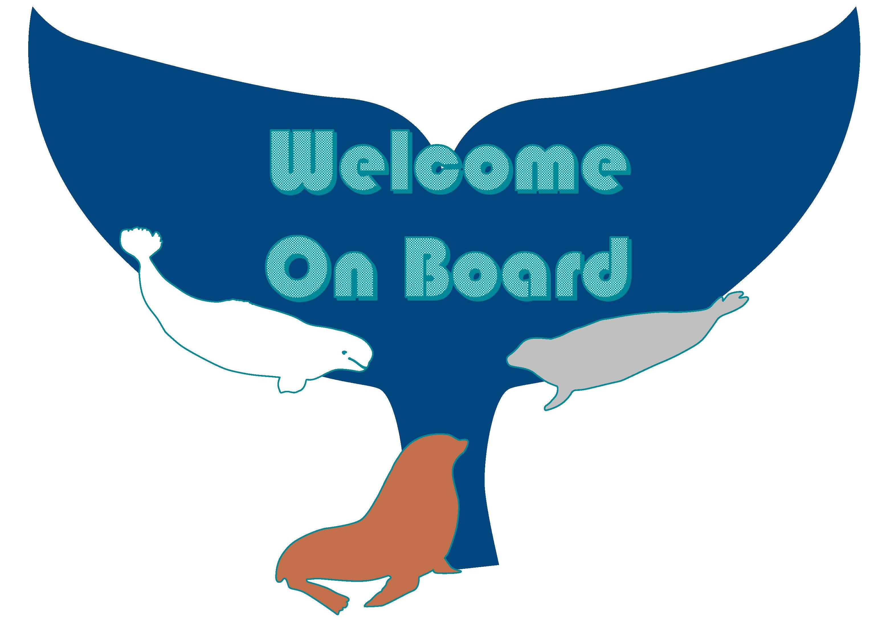

3 Onboarding

Welcome to MML, a division of the Alaska Fisheries Science Center. Whether an FTE, Affiliate, Contractor, Intern/PostDoc or Volunteer, links to general operations can be found here.
3.1 AFSC Onboarding Checklist
This Onboarding Checklist provides prompts to guide supervisors and staff through the first day, Week 1, and Week 2 for Federal and Non-Federal employees.
Our Divisional contact for onboarding new employees is Mary Foote.
3.2 Facilities
MML is located at the west end (both floors) of Building 4 on the NOAA Western Regional Center campus.
3.2.1 Key Cards
NMFS requires the use of the Common Access Card (CAC) to access buildings on the WRC campus and for login to Windows and Macintosh computers. Be prepared to show your CAC to the guards at the front gate and the front door of your work building each day. Cards must be renewed every three years.
3.2.2 Office and Laboratory Space
AFSC policy states:
As stewards of the NOAA Fisheries science mission in Alaska, the AFSC has a mandate to ensure our use of all available resources including physical office, laboratory, and warehouse space, supports the mission. Divisions have differing needs for space and the Science Director’s Office has delegated space allocation to the Divisions. If you have questions regarding how decisions regarding space are made in your Division, please pose these to your Divisional leadership.
Office assignments are based on criteria that include time in service, highest held degree, performance, and whether an FTE or non-Federal employee. Check with MML Admin first to see if a they have a key for your office. If not, request a key from the WRC Security office. Please keep in mind this form can only be signed by your Division Director.
MML’s laboratory spaces are shared by all programs and staff. For information on lab space use see the Lab Safety chapter.
3.2.3 Conference Rooms and Hybrid Meetings
Shared resources such as conference rooms are to be shared for maximum space utilization and mission support. While the names of conference rooms may be associated with a specific Division (e.g. the MML conference Room), these are available for all users.
With meetings now occurring onsite and virtually, the AFSC has provided Guidance on Holding Inclusive Meetings in a Hybrid Work Environment. Links to setting up conference rooms with access to Google Meet, Cisco WebEx, and toll free conference call lines can be found here.
3.2.4 Parking and Transportation
Parking onsite requires obtaining a WRC decal for your vehicle. Take your completed form to the Pass & ID office in Building 1 (west end, top floor).
NOAA also offers a non-taxable transit-fare subsidy program to encourage federal employees to use public mass transportation while commuting to and from work. Reimbursement to employees who use a non-motorized bicycle for a substantial portion of travel between your residence and the worksite is also availabe.
3.3 Required Training
New employees will need to complete a number of training modules in the Commerce Learning Center. Mandatory training schedules and links to NOAA required courses are provided on the main page. Some trainings are only required once while others must be completed annually; check your email for reminders and deadlines.
Depending on your job duties, you may also be required to complete specialized training, such as Aviation Egress (for field work involving aircraft), Formaldehyde Safety, or Forklift training. Check with your supervisor.
3.4 Time and Attendance
Tammy Ahlers is MML’s designated timekeeper. Please be sure to use the (N)MML Timekeeper group email account for all timekeeping-related communications.
One of the first things you will do as a new employee is set up your work schedule (i.e., Traditional, Compressed, or Maxiflex) and telework plan with your supervisor. More information about your options can be found here.
We use webTA to submit biweekly timesheets and request leave. Guidance for timekeeping in webTA can be found here.
3.5 IT Resources
TBD
3.6 Performance Plans
Each fiscal year (October to October), you will develop a performance plan with your supervisor. Performance plans outline your work duties and priorities for the year, and your ability to achieve or make progress on those tasks impacts things like pay increases and bonuses. You will have the opportunity to check in with your supervisor and adjust your performance plan (as needed) in March or April.
Plans are created and updated in the Performance Appraisal and Workforce Solution (PAWS) website. Please check out the user guide to help guide you on how to enter your accomplishments in PAWS.